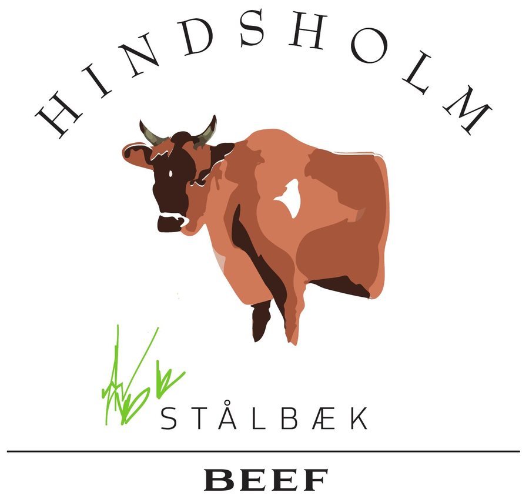
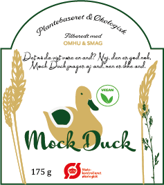
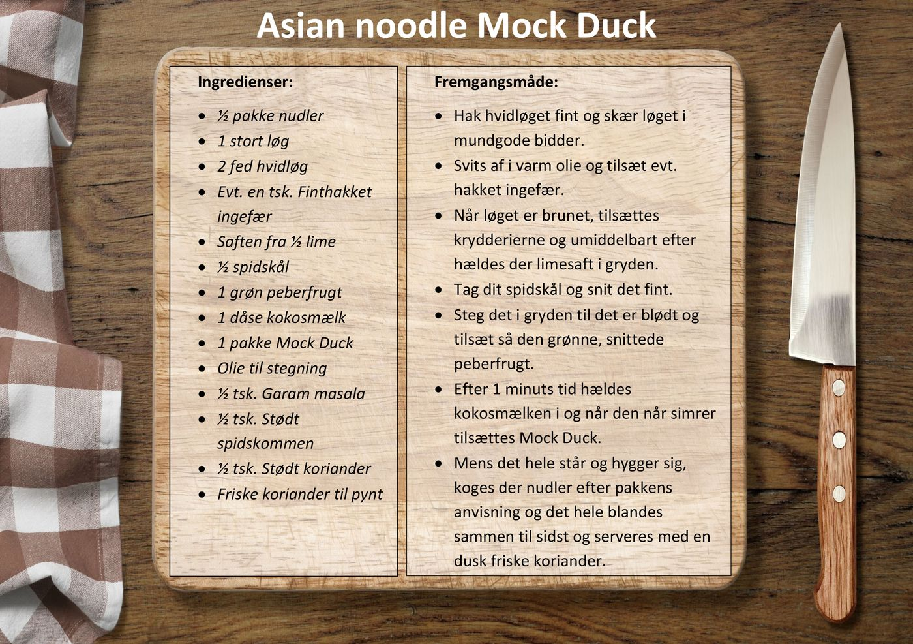
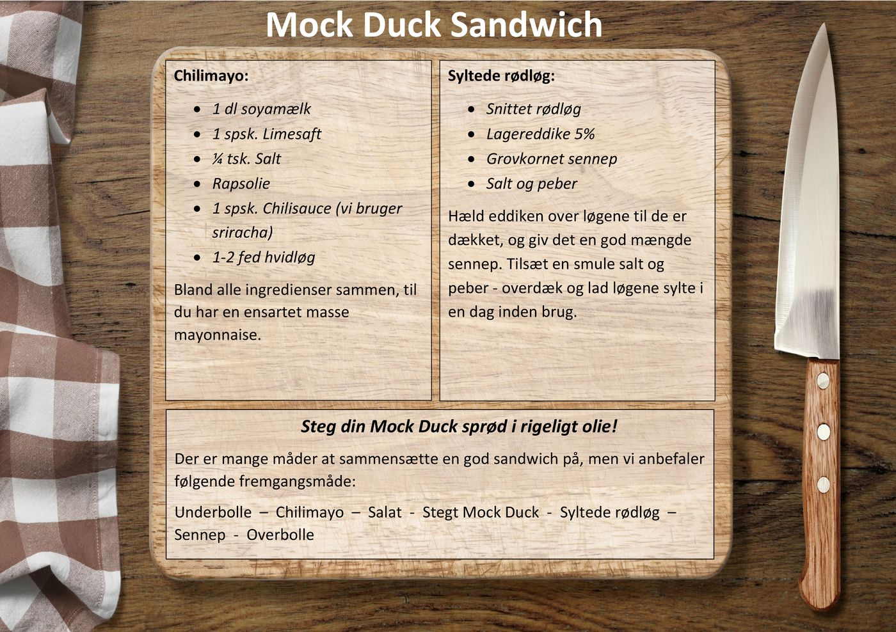

CO2 Neutral Beef
Hindsholm Beef
Hindsholm Beef var gårdens eget oksekødsmærke — kød fra jerseykøernes ungtyre, markedsført som CO2-kompenseret og brugt i Benji's Burger. Mærket hørte til den periode af gårdens historie, hvor Stålbækgård havde egen kvægbesætning.
Til dem, der ikke spiser kød
Mock Duck
Mock Duck var gårdens egen udviklede erstatning for and, solgt i butikken og brugt i retter som Duck'n Fries. Der findes stadig et par opskrifter fra den tid.


Opskrifter
Fra dengang

Asian Noodle Mock Duck
En af gårdens egne opskrifter med Mock Duck.

Mock Duck Sandwich
Brugt som indpakning af Parmesan Shortbread, produceret i starten af juni 2016.